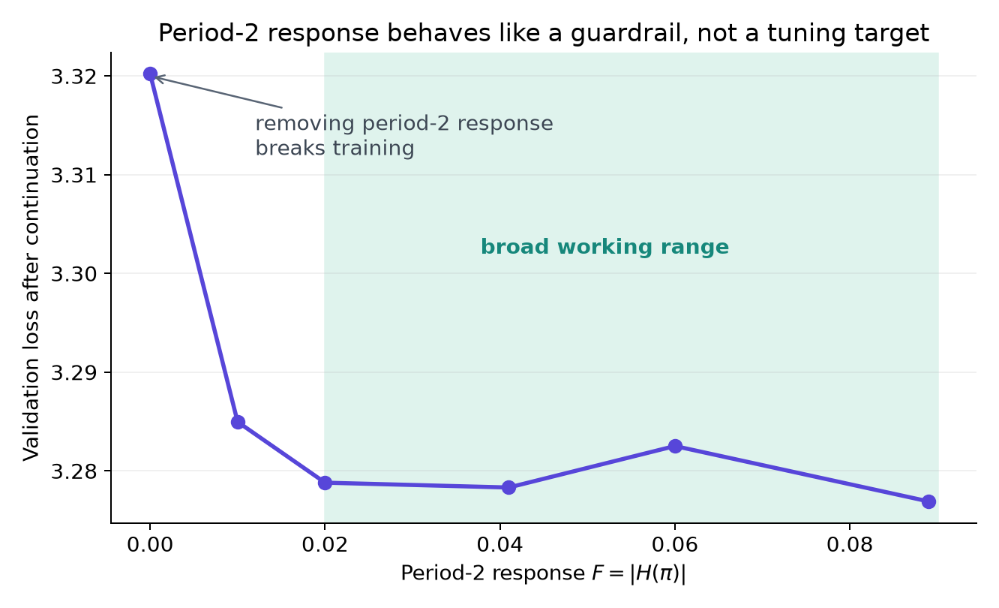
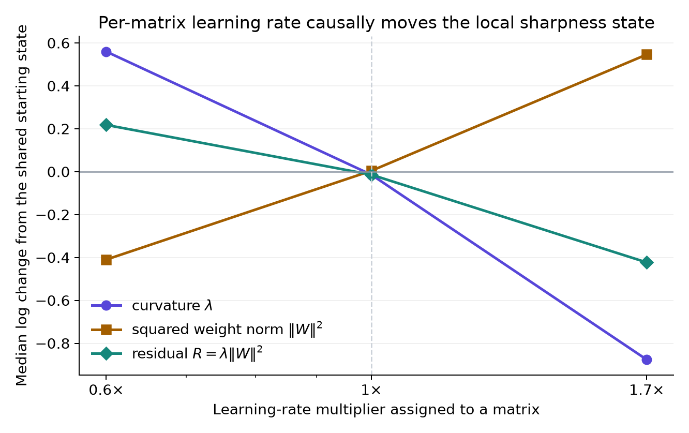

From momentum kernels to a momentum rule
Current empirical synthesis and the shortest path to a principled implementation · 31 August 2026
The aim is to derive temporal weighting from what the optimizer needs at its present state: an update direction that makes progress while preserving the edge-of-stability behavior that appears to regularize training.
A temporal kernel assigns weights to gradients of different ages before Muon takes the matrix sign. Its period-two response, F = |H(π)|, measures how much of a gradient component that reverses sign on every step remains in the momentum matrix.
Our current best hypothesis has two parts. Period-two response is a guardrail: eliminating it is destructive, but its precise value across a broad working range does not control either loss or curvature. Within that range, useful kernels differ through the matrix directions they create. The eventual rule should therefore choose a kernel from measured state, matrix by matrix, and constrain that choice by the realized stability of the resulting update.
1. Period-two response is a feasibility constraint
The first question was whether this single scalar selects a unique optimum. The scan below answers it.

This changes the role of F in the research program. We should preserve some period-two response. Inside the plateau, kernel selection must depend on other properties. The proposed inverse law—equilibrium curvature proportional to 1/F—also fails directly: reducing F by factors of two and four barely changes curvature where the law predicts large increases.
Decision. Treat the measured plateau as a constraint on admissible kernels. The cliff at F = 0 remains mechanistically interesting, but it is a separate question from what sets equilibrium curvature or chooses the best kernel inside the working regime.
2. Inside the plateau, momentum is a direction selector
Scheduling one EMA recovers about one tenth of K8's improvement over bi-Maxwell in the cleanest matched comparison. Higher-dimensional temporal weighting accounts for most of the measured gain in this stack.

The same-state comparisons show where that work enters. Applying different kernels to the same gradient history produces Muon updates with cosine similarities around 0.72–0.83. Matching mean age, period-two response, and total white-noise gain does not restore the direction. Momentum therefore remains consequential even though matrix sign removes a common scalar multiplier from the momentum matrix.
A natural description starts with the gradient-noise spectrum Sg(ω). If Hw(ω) is the frequency response of kernel w, then the scalar noise power after temporal weighting is
The surviving late-training oscillations are concentrated at periods of roughly 16–40 steps, and candidate kernels differ in this range. But a scalar integral of Dw(ω) cannot by itself specify a Muon update: matrix sign depends on which matrix directions carry that power. The serious object is the frequency-resolved covariance across matrix modes.
Next discrimination. A common-tail kernel pair will match the candidate kernels beyond the observed history window while changing their weighting inside periods 16–40. If the update and continuation ordering follow the in-window change, long unseen tails are unnecessary. If they do not, the finite-window spectral account is incomplete.
3. The regularizing state is local and steerable
The search for one corrected critical curvature led to a matrix-resolved state. For matrix i, define the norm-corrected curvature
where λi is the leading Hessian eigenvalue restricted to that matrix and Wi is its weight matrix. Multiplying one matrix's learning rate changes its own λi, norm, and residual Ri. Matrices left at the control learning rate barely move in aggregate. Each matrix's learning rate therefore acts locally on its sharpness state.

The aggregate response of R is smooth, but individual matrix slopes differ and drift across training. Thus R supplies a curvature-side actuator target; a complete momentum constraint still needs a directional measurement. The per-matrix learning-rate experiment gives us the control knob required to test a local boundary causally.
4. Direction and stability must be measured together
An update that wins one true step can lose after 100–400 training steps. In the matched kernel experiment, the one-step ordering reverses over the continuation while the leading scalar curvature does not explain the reversal. Optimizing immediate alignment alone is therefore insufficient; the update changes the state that judges subsequent updates.
The proposed stability measurement is derived from the quadratic change in loss:
For the realized full-model update Δt, define its directional curvature Dt and its descent boundary At by
The quadratic loss change is zero when Dt/At = 1. A ratio below one leaves local descent margin; a ratio above one predicts local ascent at quadratic order. Unlike a leading Hessian eigenvalue, this quantity evaluates the direction and scale of the step the optimizer actually took.
The coupling is essential. At contains −⟨gt, Δt⟩, the same alignment we want to improve. Choosing a new kernel changes both the objective and its allowable boundary. The two terms must be evaluated jointly. Per-matrix versions are local diagnostics; the equality is exact only for the full update because cross-matrix Hessian terms can contribute.
The candidate design problem is therefore
where the plateau 𝒫 prevents the known period-two failure and the ratios ρi,t ask each matrix to remain near its realized local boundary. This candidate becomes an algorithm only after it explains the existing horizon reversal and selects a held-out kernel at a new training state.
| Observed result | Interpretation | Consequence for the rule |
|---|---|---|
| The one-step winner has ρ well below one; the deployed kernel remains near one. | The immediate winner left the marginal regime. | Keep the alignment-plus-boundary hypothesis and test it prospectively. |
| Both kernels have similar ρ, despite their continuation reversal. | This boundary misses the trajectory variable that matters. | Reject this two-term rule; promote multi-step shadow dynamics or another state variable. |
| The retrospective split works, but a held-out kernel is misranked. | The explanation fitted one comparison without becoming predictive. | Reject or enlarge the measured state before engineering an optimizer. |
5. The shortest path to a principled implementation
The end product should be a compact state-to-kernel map. A schedule then emerges because the measured state changes during training. If the map has simple structure, we compress it into a zero- or one-knob implementation after the predictive test succeeds.
- Measure the realized boundary on existing trajectories. Compute Dt/At for the matched kernel continuations. This is the first necessary check of whether the horizon reversal is a direction–stability tradeoff.
- Resolve what temporal information selects the direction. Run the common-tail, in-band-matched kernel pair and compare matrix update subspaces, one-step loss, and continuation loss.
- Calibrate local control. Use the wide per-matrix learning-rate intervention to test for cross-talk and measure how reliably learning rate moves each matrix's residual R at multiple states.
- Separate norm geometry from residual dynamics. The fixed-norm perturbation test asks whether changes in R persist after removing the universal weight-norm response.
- Make one prospective selection. At a held-out state, choose among kernels using only measurements available before continuation. A correct continuation ranking is the minimum evidence for a principled rule.
What success would mean. Momentum would no longer be “EMA with a decay chosen by convention.” It would be a local temporal controller: retain enough alternating response to stay in the working regime, use the observed matrix-valued gradient history to propose a productive direction, and adjust that proposal until the realized update remains near the matrix's active stability boundary.
Scope. The loss scans are discovery measurements from shared checkpoint forks, not seed-fleet estimates. The approximately ten-percent scheduling attribution is stack-sensitive. The period-two plateau has been observed in this NanoGPT/Muon regime and is not claimed to be universal.